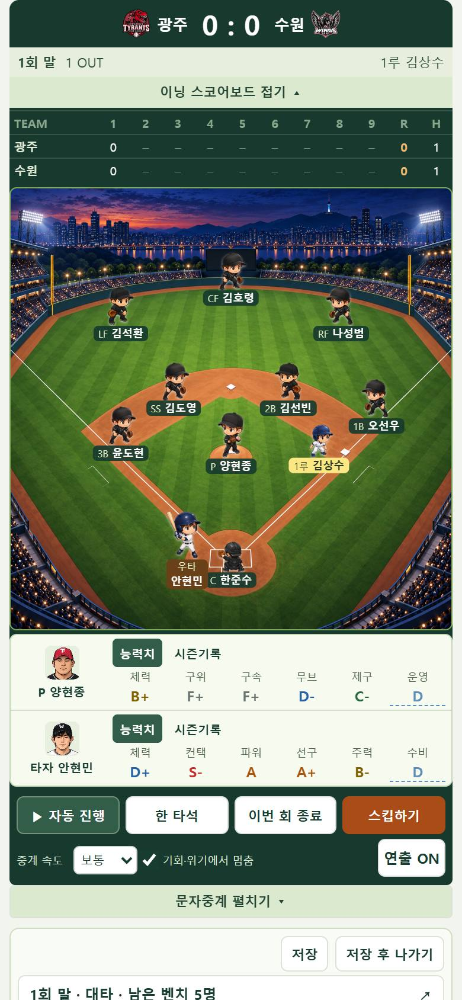
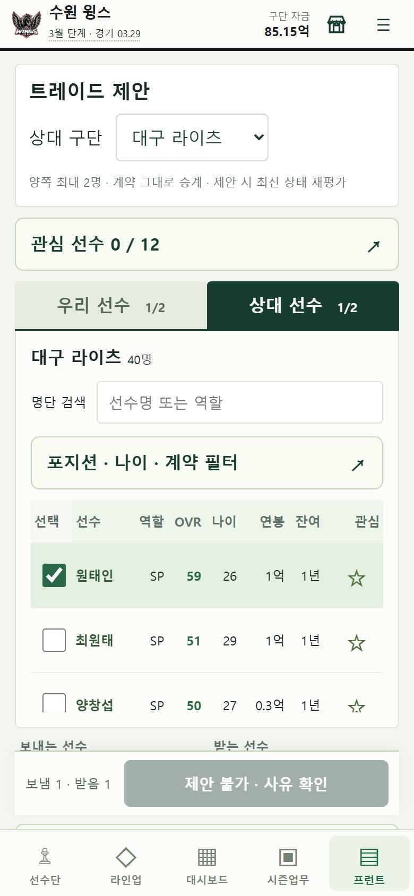
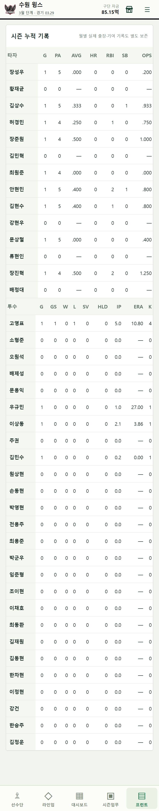
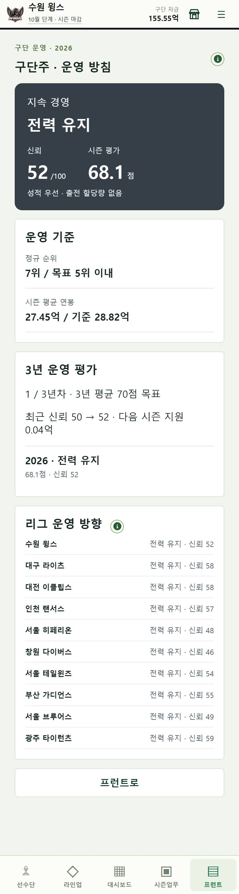
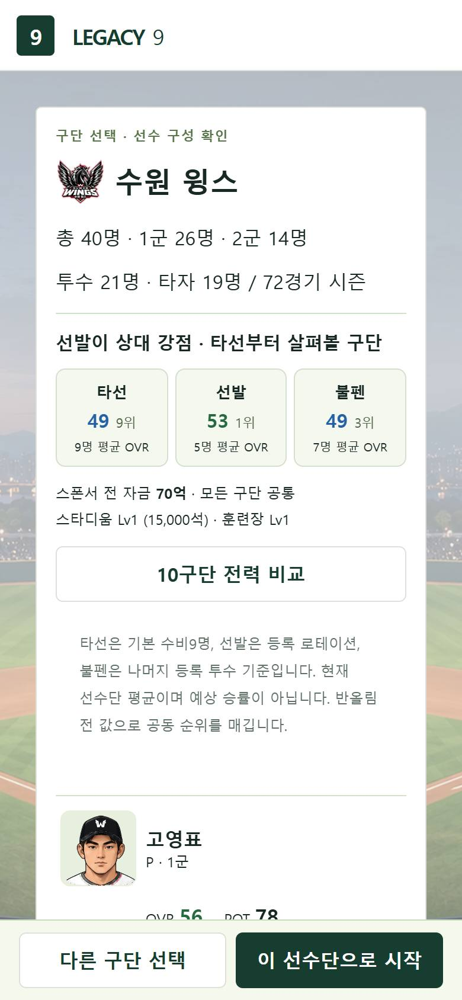
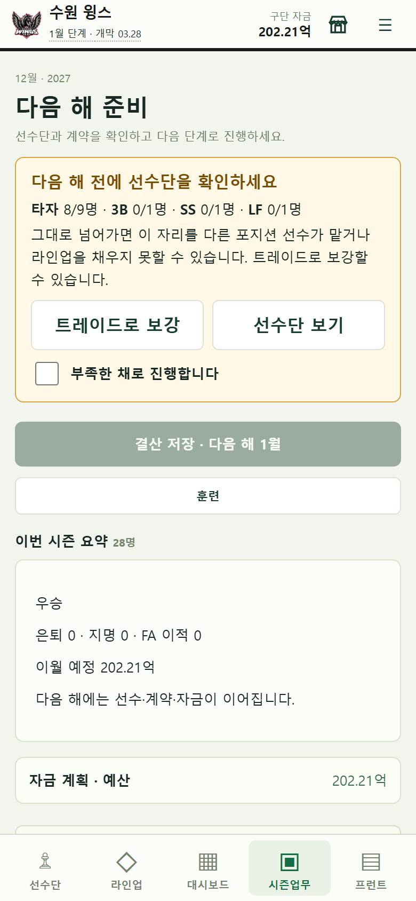
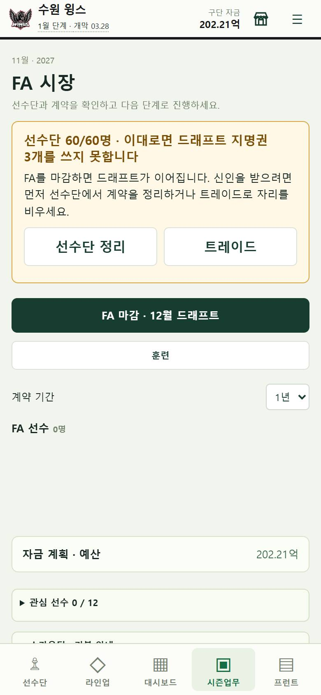
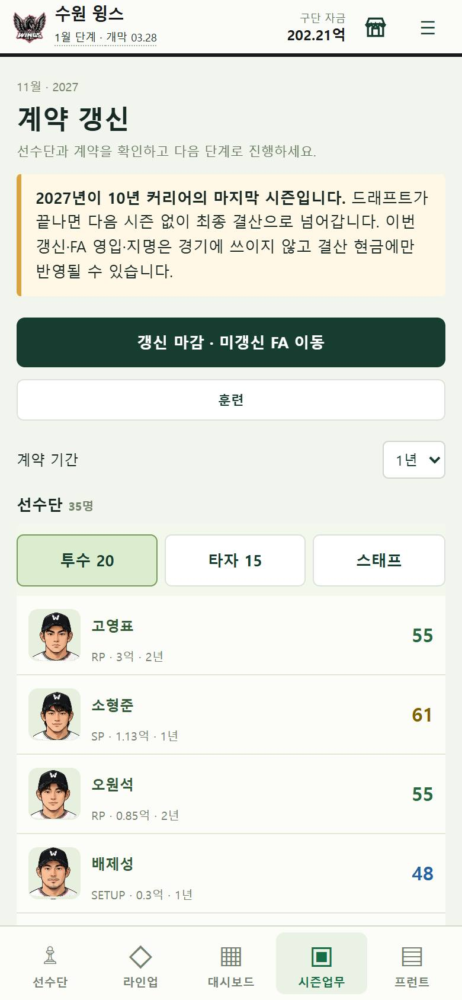

LEGACY 9 · VERSION 0.2.8 · 2026-09-23
10년을 플레이하며 걸린 것들을 고쳤습니다.
10년 플레이 QA의 배치 1(눈에 보이는 버그·표기 17건)과 배치 2(조용히 망가지는 흐름 9건)를 반영했습니다. 경기 확률·성장·AI 판단 식은 그대로이고, 사용자 결정에 따라 구단주 순위 평가만 새 규칙(v3)으로 바꿨습니다.
이번 버전의 결과
눈에 보이는 버그
트레이드 거절 사유를 한국어 문장으로, 불가능한 제안은 버튼을 막았습니다. 경기 중 스코어보드 글자, 1루 주자에 가려지던 1루수, 교체 창 원시 숫자, 기록 없음 0.000, 잘리던 표, 세 가지로 섞이던 금액 표기, 오래된 보고서 링크, 어색한 문구·줄바꿈·여백을 고쳤습니다.
흐름 안전장치
다음 해 전 포지션 부족 경고, 60인 상한 드래프트 경고, 마지막 시즌 안내, 5위 밖 '결과 보기', 고른 구단주 방침 유지, 시즌 목표와 구단주 목표 일치, 대체 야수 부족 안내를 넣었습니다.
수원 윙스 시작 선수단
2군이 14명 모두 투수였던 이유는 데이터 누락이 아니라 로스터 생성기가 원문 순서대로 14명을 잘랐기 때문입니다(원문은 투수를 먼저 적음). 2군 타자를 최소 5명 보장해 원문의 2군 타자 5명이 들어왔습니다. 새 5명은 기존 무성적 규칙(37)과 원문 나이를 씁니다. 다른 9개 구단은 바뀌지 않았습니다. 시작 선수단이 바뀌어 포스트시즌 재현 해시를 사유와 함께 갱신했습니다.
구단주 평가 v3
9년 연속 꼴찌여도 매년 73.6점·신뢰 +3이 나오던 구조를 바꿨습니다. 목표 순위는 7위보다 낮게 두지 않고(무난한 목표는 5강, '망치지 마라'는 7위까지), 순위 점수는 목표 대비 점수와 절대 순위 점수(5위 = 80, 한 계단 8점)를 절반씩 섞습니다. 같은 꼴찌 사례는 59.7점·신뢰 변화 0이 됩니다. 이미 저장된 과거 평가는 종전 식 그대로 둡니다.
모바일 실제 화면
390×844. 6~8번은 저장을 바꾸지 않고 메모리에서 만든 오프시즌 상태를 실제 화면 CSS로 그린 것입니다.








바꾸지 않은 것과 남은 위험
| 구분 | 내용 |
|---|---|
| 경기·성장·AI | 경기 확률, 성장·노쇠, AI 판단 계산식 불변. 1·3루 주자 좌표는 그림 위치만 바꿈. |
| 저장 | 진행 중 세이브 소급 수정 없음. KT 선수단 변경은 새 게임부터. |
| 발달 프로필 | POT가 09-22 능력치 복원 이후 값과 어긋나 있음(이번 변경 이전부터). 전체 재생성은 별도 과제. |
| 표기 | 앱 전체를 띄어쓰기 단위 줄바꿈으로 바꿈. 금액은 뒤 0 생략(1.5억)과 HUD 소수 둘째 자리. |
| 미검증 | 물리 스마트폰, 10년 전체 재진행, 5위 밖 문구·대체 야수 안내의 실제 진행 화면. |
자세한 항목별 원인과 전후 비교: docs/qa-reports/20260923-10year-journey/fix-batch-1.md · fix-batch-2.md